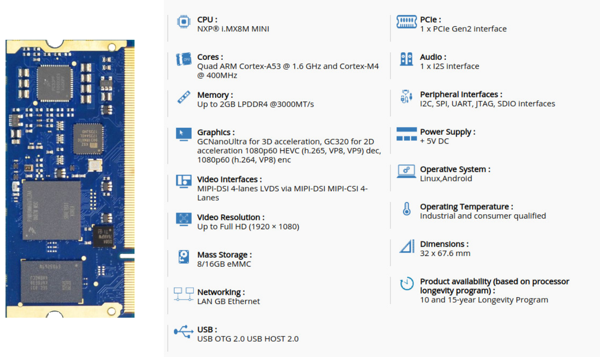
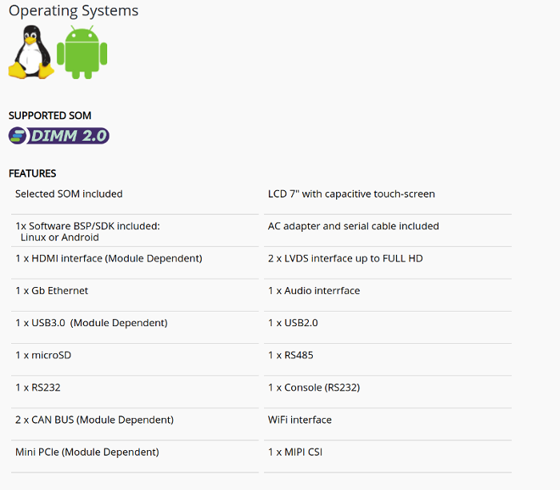

Introduction to Engicam BSP
Speaker:
Matteo Lisi
Engicam software team member
matteo.lisi@engicam.com
The Hardware
i.Core MX8M Mini
Most Engicam modules are available in SODIMM format and are compatible with each other in order to have a complete scalability.
This feature makes Engicam's modules extremely flexible and allows the customer to develop different products, with different performance and cost-optimized, using the same carrier board.
Thanks to NXP longevity program, Engicam modules have a guaranteed long term production availability.
Engicam SOM are proven in hundreds of different applications under extremely hard thermal and mechanical operating conditions.
EDIMM Starterkit 2.0
Engicam BSP
Engicam BSP
- It is a virtual machine image ready to use.
- All Yocto sources and tools already installed.
- All SOM toolchain already installed.
- QT creator already set with KIT for every machine.
VM Image
Engicam BSP is a virtual machine image in VMWare format , so if you use vmplayer only 1 click needed. You can also use with virtual box but it needs an extra configuration.The Yocto Project is a Linux Foundation collaborative open source project whose goal is to produce tools and processes that enable the creation of Linux distributions for embedded and IoT software that are independent of the underlying architecture of the embedded hardware.
Recipe: A set of instructions for building packages. A recipe describes where you get source code and which patches to apply. Recipes describe dependencies for libraries or for other recipes, and they also contain configuration and compilation options. Recipes contain the logical unit of execution, the software to build, the images to build, and use the .bb file extension.
- Configuration File contains user-defined variables that affect every build.
- Machine configuration files which are located throughout the Source Directory, define variables for specific hardware and are only used when building for that target.

Engicam meta-layer
├── conf
│ ├── layer.conf
│ └── machine
│ ├── icoremx6dl.conf
│ ├── icore-mx6.inc
│ ├── icore-mx8.inc
│ ├── icoremx8m.conf
│ ├── icoremx8mm.conf
│ ├── icoremx8xd.conf
│ ├── icoremx8xq.conf
│ ├── smarcoremx8xq.conf
│ └── ultragea-mx8qm.conf
├── doc
│ ├── kernel.md
│ ├── programming.md
│ ├── README.md
│ ├── tests
│ │ └── iCoreMx8mini
│ │ └── CTouch2.md
│ └── uboot.md
├── recipes-bsp
│ ├── imx-atf
│ │ ├── imx-atf
│ │ │ └── 0001-mx8m-mini-remove-uart4-from-m4.patch
│ │ └── imx-atf_2.0.bbappend
│ ├── imx-mkimage
│ │ ├── imx-boot
│ │ │ ├── 0001-fix-dtb-for-icoremx8mm.patch
│ │ │ └── 0001-fix-dtb-for-icoremx8m.patch
│ │ └── imx-boot_0.2.bbappend
│ ├── imx-sc-firmware
│ │ ├── imx-sc-firmware
│ │ │ ├── mx8qx-icore-scfw-tcm.bin
│ │ │ └── mx8qx-smarcore-scfw-tcm.bin
│ │ └── imx-sc-firmware_1.2.bbappend
│ └── u-boot
│ ├── files
│ │ ├── 0001-added-support-for-2GB-RAM-SAMSUNG-and-MICRON.patch
│ │ └── 0001-removed-CONFIG_LDO_BYPASS_CHECK.patch
│ └── u-boot-engicam.bb
├── recipes-connectivity
│ ├── brcm-patchram-plus
│ │ ├── brcm-patchram-plus
│ │ │ └── brcm_patchram_plus.c
│ │ └── brcm-patchram-plus.bb
│ └── lwb-bcm4343w-fwScreencast 2020-06-17 11:48:45
│ ├── lwb-bcm4343w-fw
│ │ └── brcm4343w
│ │ ├── 4343w-07_25_2016.hcd
│ │ ├── BCM4343A1_001.002.009.0038.0000_Generic_UART_37_4MHz_wlbga_ref_OTP.hcd
│ │ ├── bcmdhd_4343w_etsi-11_15_2016.cal
│ │ ├── fw_bcmdhd_4343w-11_15_2016.bin
│ │ └── fw_bcmdhd_mfgtest_4343w-11_15_2016.bin
│ └── lwb-bcm4343w-fw.bb
├── recipes-core
│ ├── busybox
│ │ ├── busybox
│ │ │ └── fragment.cfg
│ │ └── busybox_%.bbappend
│ ├── cantest
│ │ ├── cantest
│ │ │ ├── can.h
│ ├── cantest
│ │ ├── cantest
│ │ │ ├── can.h
│ │ │ ├── cansend.c
│ │ │ ├── copyright
│ │ │ ├── lib.c
│ │ │ ├── lib.h
│ │ │ ├── Makefile
│ │ │ └── raw.h
│ │ └── cantest.bb
│ ├── serialtools
│ │ ├── serialtools
│ │ │ ├── copyright
│ │ │ ├── Makefile
│ │ │ ├── serial_lib.c
│ │ │ ├── serial_lib.h
│ │ │ ├── test_gps.c
│ │ │ ├── test_serial2.c
│ │ │ └── test_serial.c
│ │ └── serialtools.bb
│ ├── test-sound
│ │ ├── test-sound
│ │ │ ├── megamix_lr.wav
│ │ │ ├── playleftright.sh
│ │ │ ├── playring.sh
│ │ │ └── ring.wav
│ │ └── test-sound.bb
│ └── webgldemo
│ ├── webgldemo
│ │ └── webgldemo.service
│ └── webgldemo.bb
├── recipes-images
│ └── images
│ ├── engicam-demo-qt.bb
│ ├── engicam-ml-image.bb
│ ├── engicam-streamer.bb
│ └── engicam-test-hw.bb
└── recipes-kernel
└── linux
├── linux-engicam
│ └── mx8mm
│ ├── 0001-fix-reboot.patch
│ └── 0002-fix-sdhc1-pads.patch
└── linux-engicam_4.14.98.bb
37 directories, 66 files
Engicam Repos
All Engicam BSP sources are open and available on github.https://github.com/enScreencast 2020-06-17 11:48:45ch.png">
support@engicam.com
Qt is a framework for creating graphical user interfaces and applications. Cross-platform framework:
- Apps runs on different software and hardware platforms (Linux, Windows, macOS, Android or embedded systems)
- No change in the underlying codebase while still being a native application with native capabilities and speed.